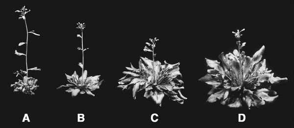
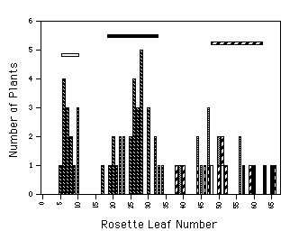
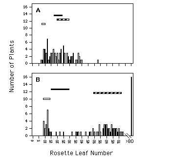
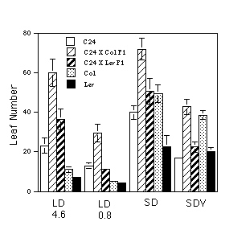

<HTML>
<HEAD>
<TITLE>
Genetic and physiological analysis of flowering time in the C24 line of Arabidopsis thaliana</TITLE>
</HEAD>
<BODY>

<H2>Genetic and physiological analysis of flowering time in the C24 line of <I>Arabidopsis thaliana</I></H2>

<P>
		Sherrie L. Sanda and Richard M. Amasino*<BR>
    Department of Biochemistry, University of Wisconsin-Madison, 
<BR>
			Madison, WI 53706-1569<P>

*To whom correspondence should be addressed at <BR>
420 Henry Mall <BR>
University of Wisconsin <BR>
Madison, WI  53706-1569<P>

Telephone:  608-262-4704<BR>
Fax:  608-262-3453<BR>
email:  amasino@biochem.wisc.edu<P>
<hr>
<B>Key Words:</B>  C24,  Arabidopsis,  Flowering,  Photoperiod, 
 Vernalization<P>
<hr>
<H2>Abstract </H2>

The C24 strain of <I>Arabidopsis thaliana</I> contains 
a <I>FRIGIDA (FRI)</I> allele that causes late flowering and 
an <I>FLC</I> allele which suppresses the late-flowering phenotype 
of <I>FRI</I>.  Crosses of C24 to plants containing an allele 
of <I>FLC</I> that delays flowering results in extremely late-flowering 
progeny. Crosses of C24 to Landsberg <I>erecta</I> (Ler), 
which contains an allele of <I>FLC</I> that suppresses the 
late-flowering phenotype, results in progeny which 
have a flowering time similar to C24.  As is the case 
for other ecotypes that are late-flowering due to <I>FRI</I>, 
the C24 strain exhibits a photoperiod response and 
flowering is promoted by cold treatment and by low 
red/far-red light ratios.  <P>

<H2>Introduction</H2>

<I>Agrobacterium</I>-mediated transformation of <I>Arabidopsis 
thaliana</I> is a useful tool to generate insertion mutations, 
to identify genes by complementation, and to study 
gene regulation.  Many <I>Agrobacterium</I>-based methods 
of Arabidopsis transformation have been developed including 
root, cotyledon, in planta, and embryonic transformation 
procedures (e.g., Valvekens, 1988; Barghchi <I>et al.</I>, 
1994; Katavic <I>et al.</I>, 1994; Sangwan <I>et al.</I>, 1991). 
 One parameter that effects transformation efficiency 
for many procedures is the Arabidopsis genotype.  Valvekens 
(1988), Sangwan (1991), and Barghchi (1994) report 
that the C24 strain is efficiently transformed and 
regenerated.  The C24 strain has therefore been used 
in a variety of molecular genetic studies such as promoter 
trapping (Kertbundit <I>et al.</I>, 1991; Topping <I>et al.</I>, 
1994).  <p>

The length of time required for a particular genotype 
of Arabidopsis to initiate flowering can be an important 
consideration in the choice of strain for molecular 
and genetic studies.  Genes involved in the regulation 
of flowering time have been identified by examining 
naturally occurring variation.  In crosses of early-flowering 
ecotypes to late-flowering ecotypes, the dominant <I>FRIGIDA</I> 
(<I>FRI</I>) gene was identified as a major regulator of flowering 
time (Napp-Zinn, 1985; Burn <I>et al.</I>, 1993; Lee <I>et al.</I>, 
1993; Clarke and Dean, 1994).  Lee <I>et al.</I> (1994) and 
Koornneef <I>et al.</I> (1994) reported that Landsberg <I>erecta </I>
(Ler) contains an allele of another flowering gene, 
<I>FLC</I>, that suppresses the late-flowering phenotype of 
<I>FRI</I>.  <I>FLC</I> alleles from other ecotypes (e.g., <I>FLC</I> alleles 
from Columbia (Col) and Sf-2) act in a semidominant 
manner with <I>FRI</I> to cause late flowering.   The suppressor 
allele of <I>FLC</I> had only been found in <I>Ler</I>.  <p>
In this study, the flowering behavior of C24 was genetically 
analyzed.  C24 contains the unique combination of a 
<I>FRI</I> allele that delays flowering and an <I>FLC</I> allele 
that suppresses the late-flowering phenotype of <I>FRI</I>. 
 Although C24 has been reported to have been derived 
from the Col ecotype, microsatellite analysis indicates 
that C24 and Col are polymorphic, and thus do not share 
a common heritage.  <P>

<H2>Materials and Methods</H2>


<H3>Plant lines</H3>

The C24 line originated from Dr. Keith Lindsey and was 
provided by Patrick Masson.  <I>FLC</I>-Col introgressed into 
<I>Ler</I> (<I>FLC</I>-Col line) was provided by Maarten Koornneef 
and described by Lee <I>et al.</I> (1994). 
 Col ecotypes were obtained from the Arabidopsis Biological 
Resource Center at Ohio State University.<P>

<H3>Growth  conditions</H3>

Unless otherwise stated, plants were grown as described 
(Lee <I>et al.</I>, 1993) with continuous illumination of 
approximately 100 micromol m-2 sec-1 of cool-white fluorescent 
light at 22-23C.  Growth and light conditions for 
the photoperiod and vernalization experiment were as 
described in Lee <I>et al.</I> 1995 (Lee and Amasino, 1995) 
.  The flowering response was measured as the number 
of leaves in the rosette when the flowering stalk reached 
1 cm in height as previously described (Lee <I>et al.</I> 
1994).<P>

<H3>Molecular techniques</H3>

DNA for microsatellite analysis was isolated according 
to Edwards <I>et al.</I> (1991).  The genotype in the region 
around <I>FLC</I> and <I>FRI</I> was determined by microsatellite 
analysis according to Bell and Ecker (1994) using loci 
nga249 and nga8, respectively.  <I>FLC</I> is closely linked 
to the nga249 locus (Lee <I>et al.</I> 1994).  Polymerase 
chain reaction (PCR) conditions were as described (Bell 
and Ecker, 1994) except that 20 microlitre reactions were 
prepared and 35 PCR cycles were used instead of 40. 
 PCR products were visualized by staining with ethidium 
bromide after electrophoresis in a 7% non-denaturing 
acrylamide gel.  <P>

<H2>Results</H2>


<H3>Late-flowering progeny in the cross of C24 to Col</H3>

When the C24 strain was crossed to the Columbia ecotype 
(Col), the resulting F1 plants were much later flowering 
than either parent (Figures 1A and 1C).   <P>

 <P>
Figure 1: The phenotype of C24 and of the F1 progeny 
of crosses of C24 to Columbia (Col) and Landsberg <I>erecta </I>
(Ler).  A)C24.  B) F1 of C24 crossed to <I>Ler</I>.  C) F1 
of C24 crossed to Col.  D) F1 of C24 crossed to the 
Ler line containing the <I>FLC</I> allele from Col.   <P>
In the F2 
population resulting from self-pollination, more than 
1/4 of the plants were later flowering than the latest 
parent (C24) (Figure 2) indicating that at least two 
genes are segregating for flowering time.   <P>

 <P>
Figure 2.  Frequency distribution of rosette leaf number 
in an F2 population derived from a cross between C24 
and Columbia (Col).  The genotypes at <I>FLC</I> and <I>FRI</I> of 
the plants flowering similar to the parental lines 
were not determined (black columns with white dots). 
 The genotypes of plants that were homozygous for both 
<I>FRI</I> from C24 (<I>FRI</I>-C24) and <I>FLC</I> from Col 
(<I>FLC</I>-Col) are 
shown as filled columns.  The genotypes of plants that 
were homozygous for <I>FRI</I>-C24 and heterozygous for <I>FLC</I>-Col 
are shown as open columns.  The genotypes of plants 
that were heterozygous for <I>FRI</I>-C24 and homozygous for 
<I>FLC</I>-Col are shown as dotted columns.  The genotypes 
of plants that were heterozygous for both <I>FRI</I>-C24 and 
 <I>FLC</I>-Col are shown as stripped columns.  The horizontal 
bars represent the leaf number distributions of the 
C24 line (filled bar), Col (open bar) and F1 (striped 
bar).  <P>
Microsatellite 
analysis was used to determine which loci contributed 
to late flowering in the F2 population.  Late-flowering 
co-segregated with Col DNA at microsatellite locus 
nga249 in a homozygous or heterozygous state and with 
C24 DNA at microsatellite locus nga8 in a homozygous 
or heterozygous state.  These two loci are located 
in the region of two previously identified genes that 
regulate flowering time, <I>FLC</I> and <I>FRI</I> (Lee <I>et al.</I> 1994). 
 These data indicate that one copy  of the <I>FRI</I> allele 
from C24 (<I>FRI</I>-C24) and one copy of the <I>FLC</I> allele from 
Col (<I>FLC</I>-Col) are required to cause the late flowering 
observed in the F2 plants.  The C24 strain therefore 
appears to contain a late-flowering allele of <I>FRI</I> and 
an allele of <I>FLC</I> which suppresses the late-flowering 
effect of <I>FRI</I> similar to the <I>Ler</I> allele of <I>FLC</I>.  <P>

<H3><I>FLC</I> Analysis</H3>

To determine whether the C24 strain contains a suppressor 
allele of <I>FLC</I>, C24 was crossed to two lines:  the <I>Ler</I> 
ecotype which contains an <I>FLC</I> suppressor allele, and 
the <I>FLC</I>-Col line in which the <I>FLC</I> allele from Col has 
been introgressed into <I>Ler</I> (Lee <I>et al.</I> 1994).  The 
F1 progeny of C24 crossed to <I>Ler</I> flowered in a similar 
leaf number range as the C24 parental line (Figures 
1B and 3A).  In the F2 population, a continuous range 
of flowering times were observed and only a few plants 
were slightly later flowering than the C24 parent (Figure 
3A).  The F1 progeny of C24 crossed to the <I>FLC</I>-Col 
line flowered with approximately twice as many leaves 
as the C24 line (Figures 1D and 3B).  In the F2 from 
this cross, the majority of the population flowered 
after forming more than 40 leaves (Figure 3B).  Because 
the cross of C24 to a <I>Ler</I> line with a late-flowering 
<I>FLC</I> allele results in later-flowering progeny than 
C24 crossed to <I>Ler</I>, the <I>FLC</I> allele of C24 appears to 
be a suppressor of late flowering similar to the <I>FLC</I> 
allele from <I>Ler</I>.  <P>
 <P>
Figure 3.  Frequency distribution of rosette leaf number 
in F2 populations derived from crosses between A) C24 
and Landsberg erecta (<I>Ler</I>) and B) C24 and a <I>Ler</I> line 
containing the <I>FLC</I> allele from Columbia (<I>FLC</I>-Col). 
 The horizontal bars represent the leaf number distributions 
of the C24 line (filled bar), <I>Ler</I> (open bar), the <I>FLC</I>-Col 
line (dotted bar) and F1 (striped bar).  <P>
<H3><I>FRI</I> Analysis</H3>

An allelism test was performed to determine whether 
the late-flowering locus from C24, which mapped close 
to <I>FRI</I> by microsatellite analysis, was a <I>FRI</I> allele. 
 Because the late-flowering gene in C24 and <I>FRI</I> are 
both dominant, the F1 of C24 crossed to a Col line 
containing the <I>FRI</I> allele from Sf-2 (Lee <I>et al.</I> 1994) 
was then crossed to Col.  The testcross progeny therefore 
contain at least one copy of the late-flowering <I>FLC</I> 
allele (from Col).  Among 257 testcross progeny, no 
plants were early flowering, indicating that no recombination 
occurred between <I>FRI</I> and the late-flowering locus in 
C24.  Thus, the late-flowering locus in C24 is likely 
to be allelic with <I>FRI</I>.  It is possible that these 
genes are not allelic, but the absence of recombinants 
indicates that at a probability of 99% the genes must 
be linked by fewer than 4 cM.  <P>

<H3>Flowering behavior of C24 under different environmental 
conditions </H3>

The effect of various light conditions and cold treatment 
on the flowering behavior of the C24 line and F1 plants 
derived from crosses of C24 to Col and <I>Ler</I> was examined 
(Figure 4).   <P>

 <P>
Figure 4.  Average rosette leaf number of the C24 line 
and crosses of C24 to Columbia (Col) and Landsberg 
erecta (<I>Ler</I>) under different environmental conditions. 
 C24 (open columns), the F1 of C24 crossed to Col (thin 
striped columns), the F1 of C24 crossed to <I>Ler</I> (thick 
striped columns), Col (dotted columns), and <I>Ler</I> (filled 
columns) were grown under long-day photoperiods with 
varying amounts of red/far-red light, short-day photoperiods, 
and short-day photoperiods with cold treatment.  Long-day 
photoperiods (LD) consisted of 20 hrs light with a 
red/far-red of 4.6 and 0.8 (Lee <I>et al.</I> 1995).  The 
short-day photoperiod (SD) consisted of 8 hrs light 
with a red/far-red ratio of 1.3.  Plants were cold 
treated for 40 days in short days as described by Lee 
<I>et al.</I> (1994) and then grown under short-day photoperiod 
(SDV) with a red/far-red light ratio of 1.3.  The averages 
and standard deviations of the values from 10 plants 
are presented.  <P>


All genotypes exhibit a photoperiod response. 
 C24 is late flowering under long-day photoperiods 
and even later flowering under short-day photoperiods. 
 The time to flowering of C24 and F1 plants derived 
from C24 is greatly reduced by low red/far-red light 
ratios and cold treatment.  F1 plants from the cross 
of C24 to Col are later flowering than the C24 parent 
under all conditions due to the presence of <I>FLC</I>-Col. 
 These results are similar to the interactions of the 
<I>FRI</I> allele from Sf-2 with the <I>FLC</I> alleles from Col 
and <I>Ler</I> (Lee <I>et al.</I>, 1994; Lee and Amasino, 1995). 
 <P>

<H3>Microsatellite Analysis of C24 and Col</H3>

C24 has been assumed to be derived from a Col ecotype. 
 Five microsatellite markers (nga8, nga63, nga162, 
nga168, and nga249) were analyzed to determine if C24 
was related to any of the five Col strains maintained 
by the Arabidopsis Biological Resource Center:  Col-0, 
Col-1, Col-2, Col-3, and Col-4.  All five Col strains 
gave identical PCR products for all five microsatellite 
markers tested.  C24 and the Col strains produced the 
same PCR products for only one marker, nga63.  Four 
markers (nga8, nga162, nga168, and nga249) gave a unique 
PCR product for C24.  Microsatellite analysis therefore 
indicates that C24 and Col are not genetically similar.<BR>

<H2>Discussion</H2>


These results demonstrate that the C24 strain contains 
an allele of <I>FRI</I> that causes late flowering and an 
<I>FLC</I> allele which suppresses the extreme late-flowering 
phenotype of <I>FRI</I>.  The C24 strain is late flowering 
under long-day photoperiods and even later flowering 
under short-day photoperiods, demonstrating that C24 
exhibits a photoperiod response.  Flowering time in 
C24 can be reduced by cold treatment and by growth 
under low red/far-red light ratios.  <p>

The origin of the C24 strain is not known.  Microsatellite 
analysis demonstrates that C24 is not genetically similar 
to any of the commonly used Col lines.  C24 contains 
a late-flowering <I>FRI</I> allele similar to many late-flowering 
ecotypes  (Napp-Zinn, 1985; Burn <I>et al.</I>, 1993; Lee 
<I>et al.</I>, 1993; Clarke and Dean, 1994).  The relatively 
early-flowering C24 strain may have been derived from 
a late-flowering ecotype by acquisition of an allele 
of <I>FLC</I> that suppresses the late-flowering phenotype 
of <I>FRI</I>.  <I>FLC</I> suppressor alleles can be readily derived 
through mutagenesis of late-flowering <I>FLC</I> alleles (Michaels 
<I>et al.</I> unpublished).  The recessive glabrous trait 
of C24 indicates that this line may have been subjected 
to mutagenesis.  This mutagenesis may have created 
the suppressor allele of <I>FLC</I> present in C24, or this 
allele may have originated naturally.  <p>

The presence of a late-flowering allele of <I>FRI</I> and 
suppressor allele of <I>FLC</I> in C24 should be considered 
in the choice of ecotypes with which C24 will be crossed. 
 Crosses of C24 to plants which contain a late-flowering 
allele of <I>FLC</I> (like Col) will result in late-flowering 
plants.  Crosses of C24 to plants derived from Landsberg, 
which contain a suppressor allele of <I>FLC</I>, will result 
in plants which flower in a reasonable amount of time. 
 <P>

<H3>Acknowledgments</H3>
   We thank Rob Rutheford for providing 
the cross of C24 to Col, Maarten Koornneef for providing 
the <I>FLC</I>-Col line, and Dr. Patrick Masson for providing 
the C24 line and for scientific cooperation.  This 
work was supported by a grant from the United States 
Department of Agriculture to R.M.A. (95-37100-1614) 
and by the College of Agricultural and Life Sciences. 
<P>

<H2>References</H2>


Barghchi, M., K. Turgut, R. Scott and J. Draper. 1994. 
High-frequency 	transformation from cultured cotyledons 
of <I>Arabidopsis thaliana</I> 	ecotypes &quot;C24&quot; and 
&quot;Landsberg erecta&quot;. Plant Growth Regulation 
<BR>
	14: 61-67.<P>

Bell, C.J. and J.R. Ecker. 1994. Assignment of 30 Microsatellite 
loci to the 	linkage map of Arabidopsis. Genomics 19(1): 
137-144.<P>

Burn, J.E., D.R. Smyth, W.J. Peacock and E.S. Dennis. 
1993. Genes conferring 	late flowering in A<I>Arabidopsis thaliana</I>. Genetica 90(2-3): 147-155.<P>

Clarke, J.H. and C. Dean. 1994. Mapping <I>FRI</I>, a locus 
controlling flowering 	time and vernalization response 
in <I>Arabidopsis thaliana</I>. <BR>
	Mol. Gen. Genet. 242: 81-89.<P>

Edwards, K., C. Johnstone and C. Thompson. 1991. A simple 
and rapid 	method for the preparation of plant genomic 
DNA for PCR analysis. 	Nucleic Acids Research 19(6): 
1349.<P>

Katavic, V., G.W. Haughn, D. Reed, M. Martin and L. 
Lunst. 1994. <I>In planta</I> 	transformation of A<I>Arabidopsis thaliana</I>. Mol. Gen. Genet. 245: 363-370.<P>

Kertbundit, S., H. De Greve, F. Deboeck, M. Van Montagu 
and J. Hernalsteens. 	1991. <I>In vivo</I> random B-glucuronidase 
gene fusions in A<I>Arabidopsis thaliana</I>. Proc. Natl. 
Acad. Sci. USA 88: 5212-5216.<P>

Koornneef, M., H. Blankestijn-de Vries, C. Hanhart, 
W. Soppe and T. Peeters. 	1994. The phenotype of some 
late-flowering mutants is enhanced by a 	locus on chromosome 
5 that is not effective in the Landsberg <I>erecta</I> 	wild-type. 
Plant J. 6(6): 911-919.<P>

Lee, I. and R.M. Amasino. 1995. Effect of vernalization, 
photoperiod and light 	quality on the flowering phenotype 
of Arabidopsis plants containing 	the <I>FRIGIDA</I> gene. 
Plant Physiol. 108: 157-162.<P>

Lee, I., S.D. Michaels, A.S. Masshardt and R.M. Amasino. 
1994. The late-	flowering phenotype of <I>FRIGIDA</I> and 
<I>LUMINIDEPENDENS</I> is 	suppressed in the Landsberg <I>erecta </I>
strain of Arabidopsis. Plant J. <BR>
	6(6): 903-909.<P>

Lee, I., A. Bleecker and R. Amasino. 1993. Analysis 
of naturally occurring late 	flowering in A<I>Arabidopsis thaliana</I>. Mol. Gen. Genet. 237(1-2): 171-176.<P>

Napp-Zinn, K. (1985). <I>Arabidopsis thaliana</I>. In: CRC 
Handbook of Flowering. 	(ed. A.H. Halevy), pp. 492-503. 
CRC Press, Inc., Boca Raton, FL.<P>

Sangwan, R.S., Y. Bourgeois and B.S. Sangwan-Norreel. 
1991. Genetic 	transformation of <I>Arabidopsis thaliana</I> 
zygotic embryos and 	identification of critical parameters 
influencing transformation 	efficiency. Mol. Gen. Genet. 
230(3): 475-485.<P>

Topping, J., F. Agyeman, B. Henricot, and K. Lindsey. 
1994. Identification of 	molecular markers of embryogenesis 
in <I>Arabidopsis thaliana</I> by 	promoter trapping. Plant 
J. 5(6): 895-903.<P>

Valvekens, D., M. Van Montagu, and M. Van Lijsebettens. 
1988. 	<I>Agrobacterium tumefaciens</I>-mediated transformation 
of <I>Arabidopsis</I> 	root explants using kanamycin selection. 
Proc. Natl. Acad. Sci. USA <BR>
	87: 5536-5540.<BR>
<P>


</BODY>
